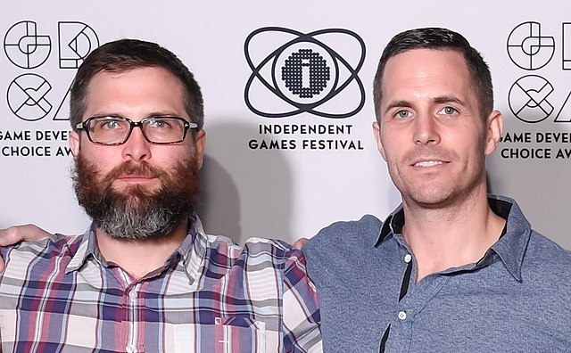
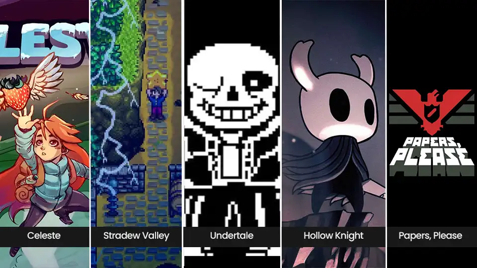
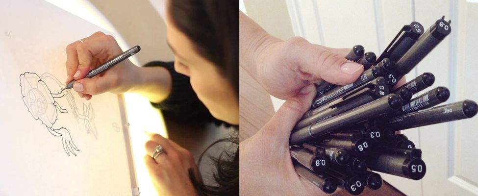
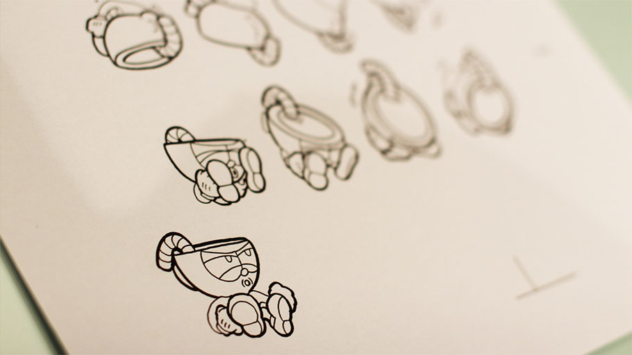
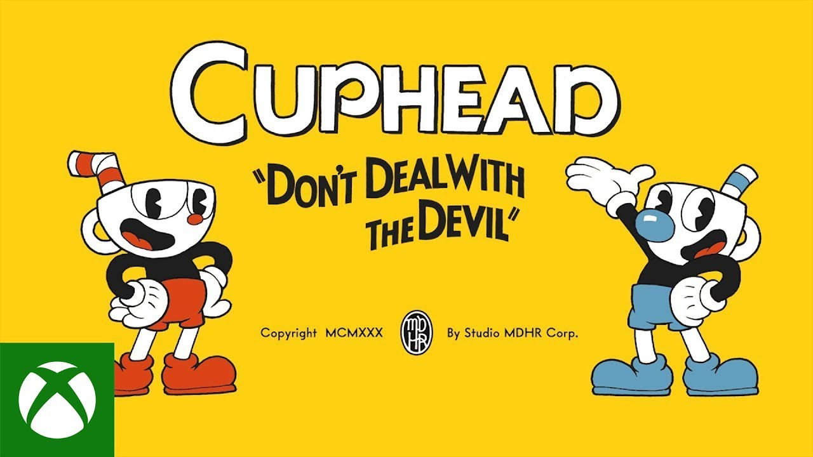

O Cuphead é um dos maiores jogos indies da história, o que significa que ele foi produzido de forma independente, sem uma grande empresa por trás. É também um jogo que se destaca pelo seu design único quando tratamos de gráfico de jogos; seu visual impressionante foi feito de forma impecável e pensado inicialmente por dois irmãos: Chad e Jared Moldenhauer. A história do porque eles tiveram essa ideia de design está explicada com detalhes em Inspirações, acesse quando quiser saber mais! Nesta página focaremos em como o Cuphead foi feito.

Os irmãos sempre foram fãs de desenhos antigos, e tinham a idéia de criar um jogo próprio, ideia essa que acabou sendo atrasada pois era algo extremamente difícil de ser feito e ainda mais de se ter sucesso com um jogo indie, além deles não terem conhecimento suficiente para isso; o que fez eles seguirem outro rumo: Chad virou designer gráfico e Jared ajudou na empresa de construções da família. Por volta de 2010, jogos indies começaram a se popularizar muito, o mercado dos jogos estava tendo muitos lançamentos independentes e de extremo sucesso.

Foi aí que os irmãos acharam uma oportunidade de iniciarem o seu projeto, eles criaram um pequeno estúdio em sua própria casa, sendo um segundo trabalho que os dois se uniam para fazer, mesmo enquanto eles continuavam com suas profissões. Foi aí surgiram algumas ideias de artes e produção Maja Moldenhauer foi um das artistas do projeto. Como a ideia era imitar a arte antiga, ela começou desenhando os personagens a mão e isso foi um passo crucial para a ideia de personagens com estes traços virarem realidade num jogo. O escopo do jogo foi aumentando conforme o desenvolvimento, eles passaram a precisar de cada vez mais papel enquanto mais ideias vinham surgindo, e isso precisava ser organizado. O jogo teve trilha sonora, traços no desenho, animação e personagens todos inspirados nos desenhos e cultura da década de 30, com todos os detalhes e personagens do jogo sendo datados do que eram comum de se ver na época, também usaram objetos da época como personagens (vitrola e ajbaag). ssndo tudo pintado a mão e visualizadas no Photoshop para ver como deveriam ficar. Não foi um jogo fácil de ser produzido, pensado ou desenhado. Sim, as artes do Cuphead começaram desenhadas a mão e passaram de 45 mil quadros feitos.


O jogo foi apresentado pela primeira vez numa apresentação da Xbox, onde ganhou visibilidade e milhares de fãs pelo mundo todo com apenas 30 segundos de aparição. Isso fez os 3 criadores iniciais precisarem de mais personagens, mais cenários e uma adaptação da história, essa necessidade e visibilidade deu a eles uma necessidade de investimento que chegou a dezenove pessoas mexendo no projeto. Cuphead foi apresentado em 2015 e só foi finalmente lançado em 2017, vendendo mais de 1 milhão de cópias em apenas uma semana de lançamento. Em meio a todos os empecilhos e dificuldades que existem pelo estilo escolhido de animação, baixo valor de produção e complexidade na criação dos chefões, Cuphead é um jogo com uma ideia linda e uma execução perfeita em detalhes e gameplay, o objetivo de design dos irmãos foi alcançada, assim como a riqueza em cada detalhe pequeno ou grande do jogo; as conquistas feitas com as ideias são visíveis em cada detalhe do jogo, explicando seu sucesso comercial e de crítica.
